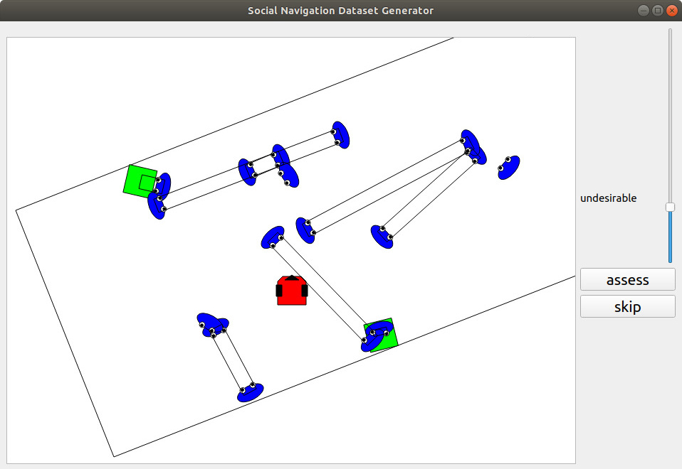

SocNav1
A Dataset to Benchmark and Learn Social Navigation Conventions
Adapting to social conventions is an unavoidable requirement for the acceptance of assistive and social robots. While the scientific community broadly accepts that assistive robots and social robot companions are unlikely to have widespread use in the near future, their presence in health-care and other medium-sized institutions is becoming a reality. These robots will have a beneficial impact in industry and other fields such as health care. The growing number of research contributions to social navigation is also indicative of the importance of the topic.
To foster the future prevalence of these robots, they must be useful, but also socially accepted. The first step to be able to actively ask for collaboration or permission is to estimate whether the robot would make people feel uncomfortable otherwise, and that is precisely the goal of algorithms evaluating social navigation compliance. Some approaches provide analytic models, whereas others use machine learning techniques such as neural networks. This data report presents and describes SocNav1, a dataset for social navigation conventions.
The aims of SocNav1 are two-fold: a) enabling comparison of the algorithms that robots use to assess the convenience of their presence in a particular position when navigating; b) providing a sufficient amount of data so that modern machine learning algorithms such as deep neural networks can be used. Because of the structured nature of the data, SocNav1 is particularly well-suited to be used to benchmark non-Euclidean machine learning algorithms such as Graph Neural Networks. The dataset has been made available in a public repository.
Contributors: Luis J. Manso, Pilar Bachiller, Pedro Núñez, Luis V. Calderita and Diego R. Faria.